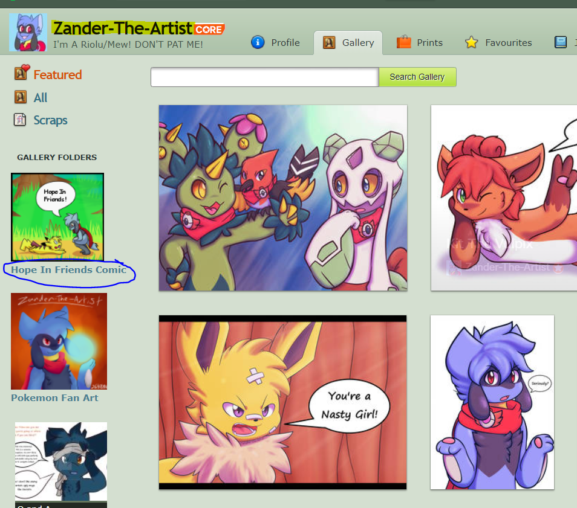

Setting Up Listeners¶
There are two commands in DeviantCord that adds listeners that check gallery folders for new deviations. However this page aims to clear misconceptions with configuring listeners. The addartist command is the first command that should be ran for a new artist,
Things to Note:¶
- The bot needs Exact Foldernames (Case Sensitive)
- The bot needs the artists name exactly (Not Case Sensitive)
- Artist Username should be in quotes
- Folder name should be in quotes
- The addartist command is used to add a new artist that has no other listeners
- The addfolder command adds another listener for an already existing artist’s folder.
Correct Arguments¶
For Example with the addartist and addfolder command it is :
$addartist <artist_username> <folder> <channel_id> <inverted>
$addfolder <artist_username> <folder> <channel_id> <inverted>
If we looked at an artists page, such as the one below
Example image from Zander-The-Artist (With Permission) see his work here
Looking above at the example image, and using it as an example you should note the following
The addartist command should have the artist name and in this case it would be “zander-the-artist” not “zander the artist”
The artist username field should be the same as the yellow highlighted area in the picture above.
The folder field for the Hope in Friends Comic folder should be the exactly what it is in the sidebar on the left. In this case the folder for the comic Hope In Friends should be “Hope In Friends Comic” not “Hope in Friends”
$addartist “zander-the-artist” “Hope In Friends Comic” <channel_id> false
Inverted in this case would be false, but it depends on what artist and what folder
Removing Folders¶
Removing a listener uses the same logic as the section above, if you haven’t read the section it is suggested that you read it first.
However there are some differences you should note. As there is only a remove folder listener command. This was done to prevent accidentally deleting a whole artist from the folder as multiple folders can be stored under an artist.
As a result you can only delete one listener at a time. The command is as follows
$deletefolder <artist_username> <folder>
This will delete the folder from the artist.json file and no more notifications will be posted to Discord for that folder unless you readd it.
Additionally if you are having trouble remembering what folders are currently being listened for new deviations you can use the listfolders command
$listfolders
Inverted Galleries¶
Inverted galleries is the term we use to indicate that newest deviations are at the top instead of the bottom. An example of an inverted gallery can be seen here
The inverted argument would be declared true or false in the addfolder command and addartist command.
Warning
As of version bt-1.2.0, the inverse arguement should only be used for artists who have dependently posted an inverted gallery declaring inverse as false will now check for the 20 deviations posted at the top and will check for more at the bottom up until DeviantArt’s API says there is no more deviations.
Discord Developer Mode¶
Discord Developer Mode is required in order to get text channel id’s, you will need to enable it by clicking the gear icon near your name

Once you get into that menu click the Appearance Tab

then scroll down to the bottom and enable Developer Mode.